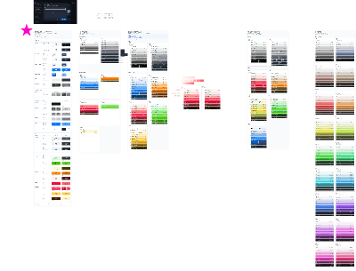

Brand Assets
本地 Figma archive 已接入，并保留了源文件 thumbnail。该 thumbnail 是来源证据，不是 Solvely.ai logo、app icon 或 wordmark。
Figma thumbnail

来自 assets/figma-source-thumbnail.png，用于确认本地 .fig source 已接入。
build/
未创建；没有 context/.../files/build/... 证据。
fonts/
仅包含 README.md；没有可绑定字体文件。MCP 深度读取仍需要 Figma 云端 fileKey/editor access。